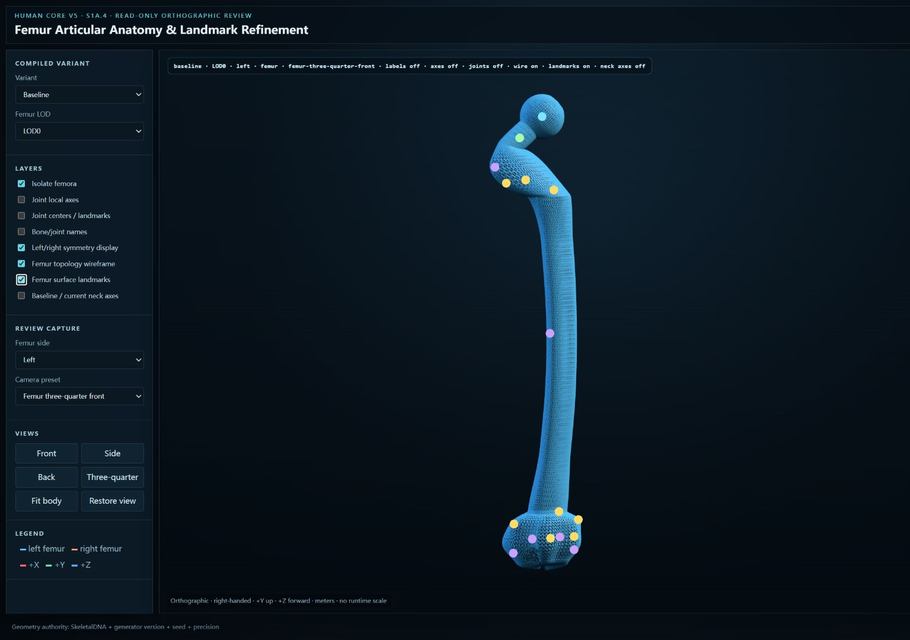
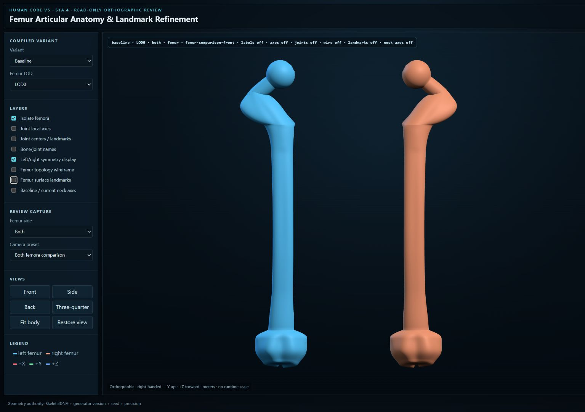
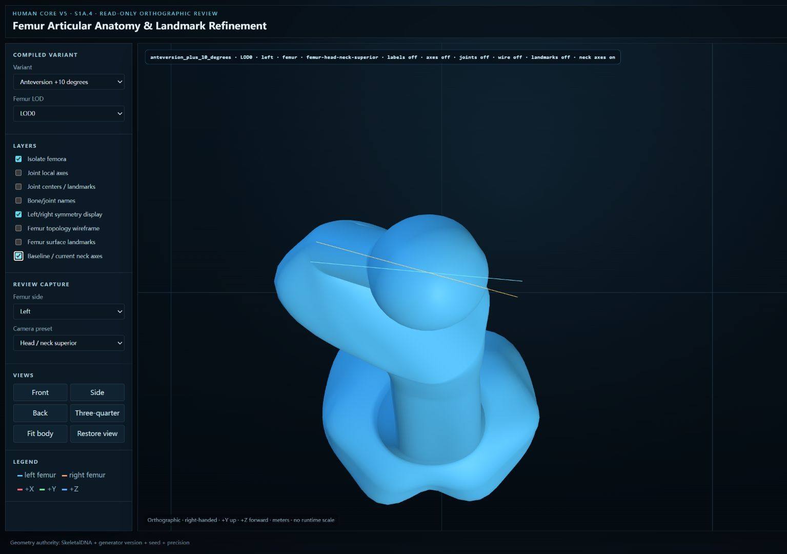
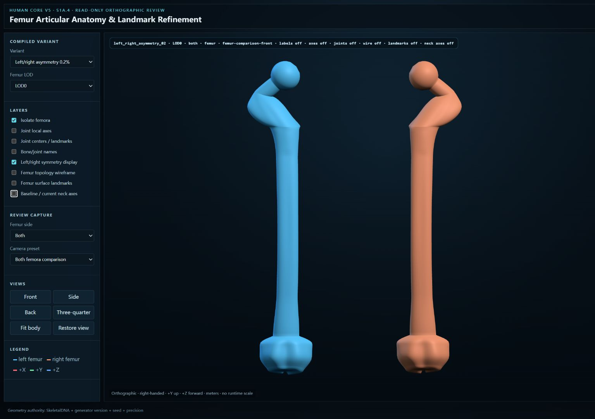
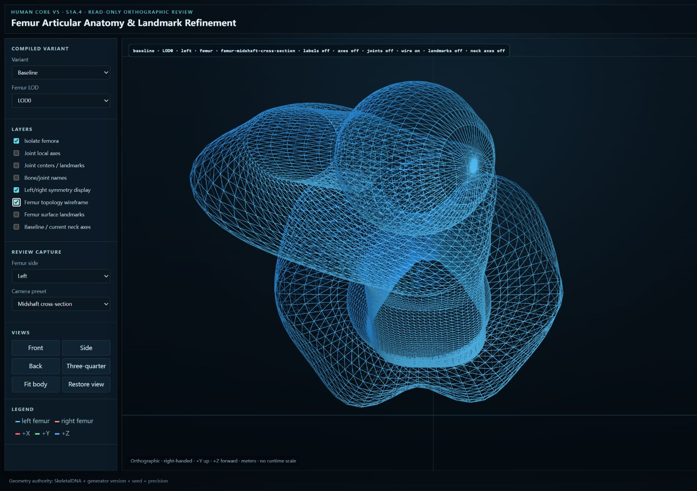
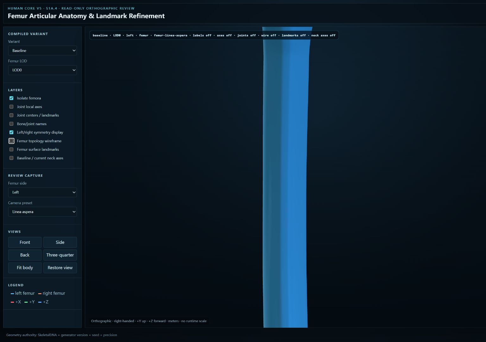
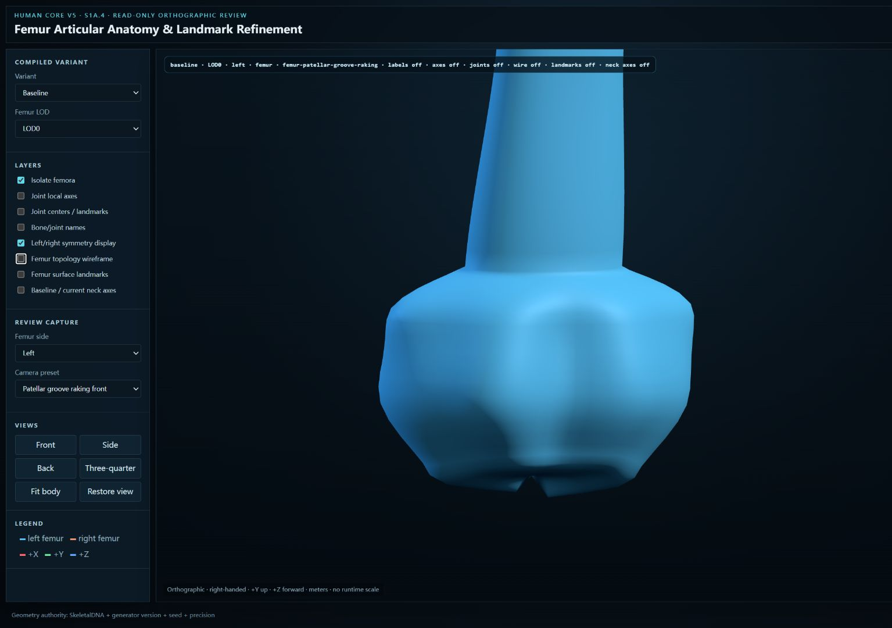

LOD0 · wireframe + landmarks
LOD1 · wireframe + landmarks
LOD2 · wireframe + landmarks

Baseline · both sides

Baseline vs +10° anteversion axes

Left/right asymmetry · no scale

Midshaft · station-driven wire

Posterior linea aspera

Patellar groove · grazing light